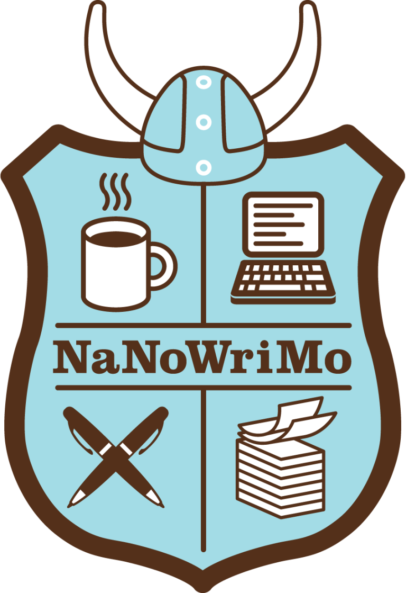

FREE BOOK! JUST SIGN UP
TO MY MAILING LIST AND
GET ONE OF MY BOOKS OF
YOUR CHOICE – FOR FREE!
POSTED BY
DYLAN HEARN

POSTED ON
FEBRUARY 13, 2017
POSTED UNDER
UNCATEGORIZED

COMMENTS
6 COMMENTS
It’s been a while since I’ve posted (sorry, I’m still working hard on my next book) and hadn’t planned to post but this piece from Terry on Rosie’s blog deserves to be spread far and wide.
If you are an author and you ask someone for their honest opinion of your work, don’t get upset if they give it. Book bloggers are treasures. They should be encouraged, praised, and if possible given red wine and chocolates. These wonderful people give up their time, for free, to review books. And as every book is a piece of art, whether they like it or not is subjective (if you don’t believe me, look up the one-star reviews on your favourite book).
A well-thought out review is a gift, whether positive or negative, and if you don’t think you can react well to somebody not liking your book, then you should think long and hard about publishing it at all.
Sponsored Content

A new tip for nail Fungus Found (Do this every day)
EelHoe | Sponsered

Why people over 45 love this toothbrush
Teeth care | Sponsered

Be careful
Electronics | Sponsered
POSTED BY
DYLAN HEARN
POSTED ON
NOVEMBER 24, 2016
POSTED UNDER
WRITING
COMMENTS
24 COMMENTS

… me!
I have to admit, I was a little dubious about NaNoWriMo before starting. Yes, I saw the value of creating a community of like-minded individuals all focussing on one goal, but at the same time 1667 words a day, while not a huge amount on a single day, is a lot of writing day in, day out, for a month.
From a personal point of view, the month of November wasn’t exactly quiet. Along with work and being there for my family, I’d also recently taken on learning a set of songs for a duet, there was my oldest son’s tenth birthday split over two weekends (as the birthday fell on a Wednesday) and I had committed to starting a cricket coaching course at the end of the month, ruling out more weekend writing time.
Yet in the end, I did it and with more than a week to spare!
So what have I learned?
1 Having a deadline really spurs you on
I know I work well to deadlines with my job but this was the first self-imposed deadline I’ve had for my writing and it really drove me on. By committing publicly to delivering something I found I was planning my days better, snatching the odd 30 minutes writing time when I could instead of sitting in front of the box, and generally doing all I could – without upsetting my family – to hit my goal.
2 I can write faster than I thought
When writing my first three novels, on a good day i could hit between 2000 to 2500 words. My best was just over 3000 words, yet there were a number of times during the past month where I wrote well over 4000 words in a day. This may have had something to do with the story itself, having a clear target or just generally being more focussed, but when writing in the future my expectations of what’s achievable has changed.
3 Not stopping to edit works
I’ve always been a believer of not looking back when writing your first draft but this year I took it a step further than I’ve done in the past. Where I used to correct the odd sentence or paragraph I was which I was particularly unhappy, for NaNoWriMo I just left comments in red all over my MS on areas I felt needed work or where I had a change of plan, but then carried on going. While this was a great help to hit the word count, it will be interesting to see how the first rewrite goes!
4 The joy of overwriting
One of my favourite discoveries during NaNoWriMo was how much fun over-writing is. What do I mean by this? In my case it was allowing myself to describe settings or characters in more detail than was needed, or to write far too much exposition than would be in the final book. This is a big change for me. I usually write sparingly and go back to add further detail later, but this time around over-writing really helped me get under the skin of the world and the story I created. I know a lot of what I’ve written will be (rightly) cut during the edit but it has been fun letting myself go a allowing myself time to explore the people and settings I’ve created.
5 I’ve been introduced to even more lovely writers
I’ve always maintained that one of the best things about writing is the supportive community, and through NaNoWriMo I’ve got to meet a lot of new supportive and encouraging writers. Sadly I haven’t been able to go to any meet ups but the response on the NaNoWriMo regional message board has been really positive. Next year I’ll definitely attend.
Of course, my first draft isn’t finished. I’m not sure whether I’ll hit my extended goal of finishing it by the end of the month but it will be really close and I can’t wait to then get my teeth into it and start editing in the new year.
So what about you? If you’ve taken part in NaNoWriMo this year, what has been your experience? If you haven’t, have I persuaded you to do it next year? I look forward to hearing from you.
POSTED BY
DYLAN HEARN
POSTED ON
NOVEMBER 16, 2016
POSTED UNDER
WRITING
COMMENTS
16 COMMENTS

As you can probably tell with the lack of posts and minimal comments on other blogs or social media platforms, I am still thoroughly engrossed in NaNoWriMo 2016. The good news is that I’m still flying. I don’t know whether it is the book idea or whether it is the fixed goal of 50K words in a month, but on my full writing days I’m achieving between 3000 and 4000 words a day, even on days where I feel I’m trying to chisel each word out of rock one at a time. This compares to 2000 on a good day when writing my previous novels. If there’s only one thing I take away from this process, it’s that I can write a lot faster than I originally thought.
The story itself is progressing nicely. I’m still in love with my main characters, the world is filling out nicely and there haven’t been too many deviations from plan. I do know, however, that there will be a lot of work to do during the edit.
Also, the story went through a dark phase last week – a prime example of art reflecting life. I found myself rewriting sections because this is a book aimed at older children, and while there’s nothing wrong with scaring children a little bit – look at Roald Dahl’s stories for example – I don’t want to traumatise them. That said, I’ve now come out the other side – at least in my writing – and I’m still on course to beat the 50000 words by the end of November. In fact, as you can see there is a good chance I’ll pass that mark next week!
This then leads me on to my next challenge. I’ve estimated that the whole of this draft will be around 65,000 words, so my new target is to try to finish the full draft by the end of the month. This is going to be tight as my weekends are fairly booked up between now and then, but it’s good to keep on pushing.
So how are the rest of you getting on? I’d love to hear from you.
POSTED BY
DYLAN HEARN
POSTED ON
OCTOBER 19, 2016
POSTED UNDER
WRITING
COMMENTS
38 COMMENTS
It’s that time of year when writers across the world get ready for the largest writing event of the year, NaNoWriMo, and this year I’ve decided to joe one of them.
For those of you who aren’t aware, NaNoWriMo is National Novel Writing Month, where from the 1st November participants begin writing the first draft of a new novel. The goal is to complete 50,000 words by midnight on the 30th November – an average of 1,666 words per day. The event started in 1999 with just twenty-one participants but has grown year-on-year to hit 431,626 participants in 2015.
I’ve always wanted to take part in NaNoWriMo but so far the timing has never been right. This year, however, the timing couldn’t be better. I’ve been working on the idea for a children’s novel over the past couple of months as I’d love to have a book published that my two boys can read. As those who follow my blog regularly know, I’m half-plotter, half-pantser, so I’m as prepared as I like to be with a good idea of the who the main characters are and their motivations, a general idea of the world I’m creating, and an outline of what happens where – without being too prescriptive. I’ve also researched the relevant historical era I’m loosely basing the story around and I’ve already written a first chapter – which will need re-writing – so I have a good feel for the style I’m looking to achieve.
Still, one thousand, six hundred and sixty-six words per day is no small undertaking. The most I’ve written in one day is 4000 words but that was a one-off, took all day and my brain was mush by the end of it. Finding the time to write over one and a half thousand words each and every day will be tough, and if that wasn’t hard enough, I’m also starting my cricket coaching qualifications later the same month, so time will be even tighter – and that’s not even mentioning family, work, music and so on. But, it’s good to challenge yourself every now and then, right?
The most important thing to remember about NaNoWriMo is that it is a bit of a misnomer. By the end of the process you won’t have a finished novel. Unless you are writing children’s fiction (as I am) you may not even have a completed first draft, but you will have completed the bulk of the writing AND got yourself into the habit of writing regularly, one of the biggest obstacles to completing a novel.
So the big question is – who’s joining me?
If you are, I’d love to link up with you so we can share our journeys together. If you have been thinking about taking part but aren’t sure where to start, just click here to register. It’s very straight-forward and once registered you can link up with other authors. My author profile page is here. You don’t have to have anything prepared, many authors – including Stephen King – start off with an idea of a character and a situation and take it from there.
If you’ve already registered to take part, please feel free to let me know in the comments below or to hook up via my author page. And even if you don’t decide to take part, please feel free to check out my progress and cheer me along (or give me a verbal kick up the backside) whenever you can. I think I’m going to need all the support I can get!
Do you like intelligent thrillers? If so, join my mailing list and get one of my 5-star rated near-future dystopian thrillers absolutely free. The mailing list is guaranteed spam free and I will only contact you if I have a new book launch or an exclusive short story to share. To sign up, please click here.
POSTED BY
DYLAN HEARN
POSTED ON
OCTOBER 13, 2016
POSTED UNDER
WRITING
COMMENTS
3 COMMENTS

About eighteen months ago I wrote a post about a new startup, Reedsy, who were looking to develop a marketplace to bring authors and publishers together with the best editing, cover design and book marketing professionals. At the time I thought it was an intriguing idea, as indie authors were realising that for their books to be taken seriously they needed to be well-written, well-edited and have a professional cover but it was difficult to know where to find the best possible support. At the same time, I was concerned that this was yet another service looking to earn income from authors (and publishing professionals) without delivering any real value in return.
Since my last post, Reedsy has grown, developing it’s services and website, so I thought it was time to revisit what they offer.
Full disclosure: Ricardo Fayet, one of the founders of Reedsy, has read and given great reviews of my books. This has no impact on this post and I have never been requested to write anything about Reedsy. I also have not used the Reedsy marketplace to find a publishing professional but my editor offers his services via Reedsy.
What’s new?
Where the old Reedsy was pretty much the market place, allowing authors to search for marketing professionals and professionals to promote themselves, Reedsy now offer a lot more.
Learning
They have a series of free Live Videos where industry experts talk about specific topic (e.g. cover critiques, how to go about your second draft), all of which are really useful for a novice or experienced writer. They also offer a series of free courses on topics as diverse as how to build your writing routine to getting the most from Amazon’s algorithms. The best thing about these services are that you don’t have to be registered with Reedsy to take part (although the courses are via email so you do have to give you name and email address). Even if you don’t use any of Reedsy’s other services, these are well worth having a look at.
Book editor
Reedsy have also created a book editor, free software for you to use to write your novel. Because it is online, you can use it to collaborate with your editor and once complete it can create the final ebook or POD file for you. My thoughts on this are mixed. In function it is very similar to Scrivener – which I love – and the fact it is free makes it very attractive. However I have two concerns. First, by using this service you are tying yourself to Reedsy in the same way some of us are tied over time to Google or Apple products. I’d want to know how to access my files if I change my mind. Second is around the files themselves. Where are they stored? Who owns them? What happens if Reedsy goes bust? It’s not clear from the promotional page and I would want clear answers on these points if I was ever to think about using the service.
The market place
The market place has developed since I last looked from being predominantly editors and cover designers to now promoting PR, Marketing and Ghostwriting services as well. You can filter your search by the type of service offered and the genre they specialise in to help find the right person for you. What is noticeable is that there hasn’t been a significant rise is the number of professionals offering their services. For me, this is a good thing. It shows that Reedsy aren’t just trying to pull in numbers to make a quick buck but are
One thing that’s knew is you can see the response rate of the professional, so you know whether your enquiry will be looked at or not. It’s a nice addition but I’d still like to have some form of rating or feedback where verified users of the service can give feedback of their experience. I would also like to have some indication of an indicative price range as it’s difficult to tell initially whether you would be wasting your (and the service provider’s) time with an enquiry.
Summary
As an author, I like what Reedsy are doing and the way they are approaching the market. They appear to be in it for the long haul and are choosing quality over quantity, and are building up a portfolio of services to support authors and offer real value. While I don’t think their offer is perfect, if they continue in this manner they could soon become the one-stop shop for authors they’re aiming to be.
At the very least, I would recommend anyone interested in writing to check out their learning videos and courses, whether you are starting out and looking to develop your craft, or if you are an experienced writer looking to learn move about the intricacies of the trad or indie publishing scene. They cover a wide variety of topics and are delivered by market experts. Also, they’re free, so what do you have to lose?
On a personal level I’m lucky that I already have an editor and cover designer I enjoy working with, but if I was ever looking for a professional service, I would definitely look on Reedsy on top of my other searches.
What about you? Have you used Reedsy at all? Do you have any feedback you would like to share with us? I would love to hear from you.
Do you like intelligent thrillers? If so, join my mailing list and get one of my 5-star rated near-future dystopian thrillers absolutely free. The mailing list is guaranteed spam free and I will only contact you if I have a new book launch or an exclusive short story to share. To sign up, please click here.
older posts
SECOND CHANCE: CLICK TO
PURCHASE

ABSENT SOULS: CLICK TO
PURCHASE

GENESIS REDUX: CLICK TO
PURCHASE

MOST VIEWED POSTS IN THE
LAST WEEK
MY LATEST POSTS
MY LATEST POSTS
Enter your email address to follow this blog and receive notifications of new posts by email.
Join 7,970 other subscribers
RECENT COMMENTS
lynnjwood on 10 Things I wish I’d kno…

Dylan Hearn on #Bookblogger bashing: in the e…
FOLLOW ME ON TWITTER
My Tweets
CATEGORIES
STUFF YOU MAY HAVE MISSED
February 2017
November 2016
October 2016
September 2016
August 2016
July 2016
March 2016
January 2016
December 2015
November 2015
October 2015
September 2015
August 2015
July 2015
June 2015
May 2015
April 2015
March 2015
February 2015
January 2015
December 2014
November 2014
October 2014
September 2014
August 2014
July 2014
June 2014
May 2014
April 2014
March 2014
February 2014
January 2014
December 2013
November 2013
October 2013
September 2013
August 2013
July 2013
June 2013
PEOPLE WHO LIKE WHAT THEY’VE SEEN

AFFILIATE NOTICE:
This blog is a participant in the Amazon Services LLC Associates Program, an affiliate advertising program designed to provide a means for sites to earn advertising fees by linking to amazon.com
Dylan Hearn on 10 Things I wish I’d kno…